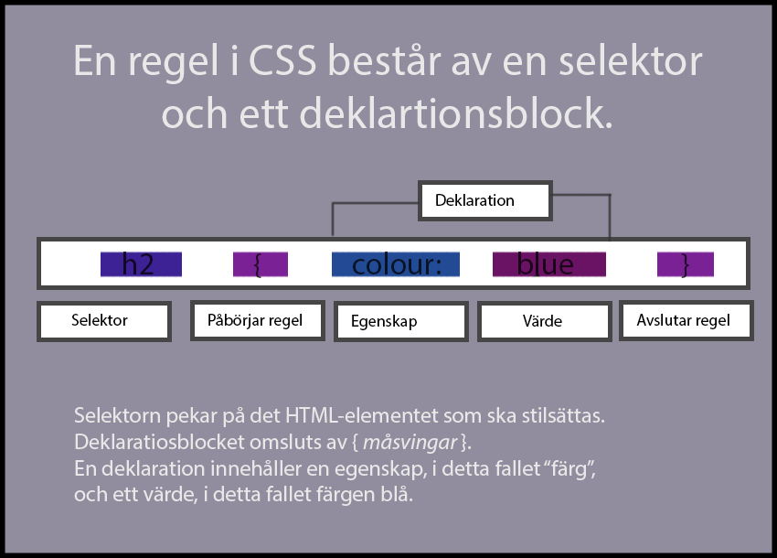

Prioriteringar -
Vad är en regel i CSS?:

Vad menas med kaskad i CSS:
-
en liten förklaring
-
CSS står för cascading style sheets (på svenska stilmall), och är koden som används för att stilsätta
ett html dokument. Exempel på stilsättning är bakgrundsfärg, textstorlek och centrering av bilder.
“Kaskaden” är en algoritm. Denna definierar hur olika egenskapers värden som hämtas från olika källor
(som färgen på texten) ska kombineras, och i vilken prioritering detta ska ske.
Exempelvis kan man stilsätta textfärgen för hela dokumentet vitt genom att skriva
body { color: white}; , men även vilja stilsätta vissa rubriker med textfärgen grå.
Detta specifieras då mer precist genom att skriva h1 {color: grey}.
CSS Kaskaden bestämmer alltså hur webbrowsern ska lösa konflikter inom CSS deklarationerna.